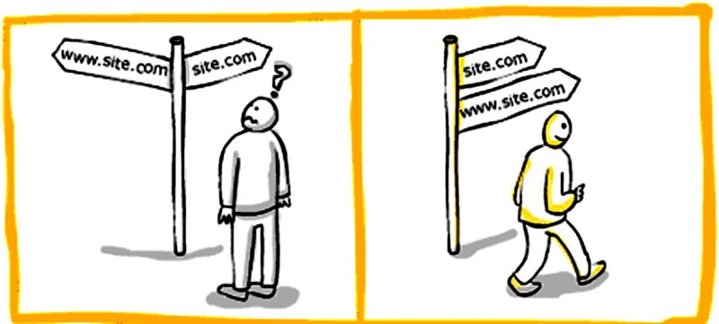
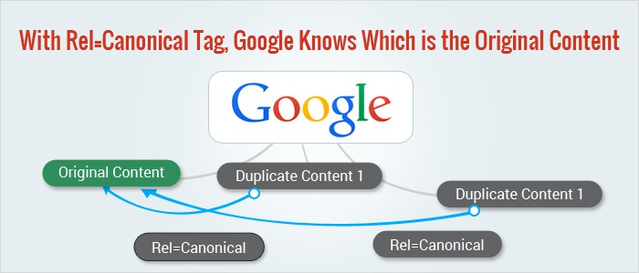

Canonicalization is a process of choosing and picking
the best url name of a website when there are several choices to pick from,
and it usually refers to home pages. For example,
most people would consider url names that is being named after their company.
and also it is a way of telling the search engines that a specific name of a URL represents the home of
copy of a page . Using the canonical tag prevents problems due to copying and caused by identical or
"duplicate" content appearing on multiple URLs. Practically speaking,
the canonical tag tells search engines which version of a URL you want to appear
in search results.

URL CANOCALIZATION
Google definitely wasn’t the first search engine that surfaced the Internet. But Google did things in a better way and provided results that were actually useful. Google hasn’t stopped expanding as a company since that very day.
Though SEO is done for all the search engines that exist today, one major search engine that handles most of the traffic on the Internet is Google. Whenever we talk about SEO, people automatically assume that we are talking about optimizing the website for Google.
When it comes to SEO, we need to check many factors, both onsite as well as offsite. But if your onsite SEO is not up to the mark, no matter how well you do your offsite SEO, you will not get the results you are expecting.
The term Canonicalization can be tough to understand. Let me try to explain this in simple terms.
Let’s say there are two URLs of a website:
http://thewebpage.org
http://www.thewebpage.org
Both of those pages show content, and none of these pages redirects to any one of them. This can result in duplicate content issue on Google, and you can face penalties.
Let us see one more example. There are two URLs on a website that result in the same page resolution.
http://thewebpage.org
http://thewebpage.org/index.php
If both of these web pages show the same result, then this might cause an issue as well!
You might not pay much attention to this issue, but this might result in serious duplicate content penalties. The problem with search engine bots is that they can’t decide which version of the URL they should add in their index. If two pages are resolving the same content, they will just assume one copy is a copy of the other and your website will get penalized.
If your site is opening on 2 URLS showing the same content, then you must fix it. You must use server settings so that whether a user opens with www or without www, the site will open on any of the one version. In this way, you can fix the canonicalization.
Though, at times you would like to share same content on two URLS, then you can use rel=”canonical” tags to let search engine know that which is the original and which one is a copy of it. This can save you from duplicate content penalties.

WHEN WILL YOU USE URL CANONICALIZATION
Now that you know what exactly Canonicalization means, you can move forward on the topic and see when should you use it. Because there are many more cases other than the two I have mentioned in the examples above.
Here are a few conditions that can be prevented with proper URL Canonicalization.
Different URL for one same content
Various various categories and tags that result in same content
Mobile website displaying same content but on different URL/subdomain
URLs having HTTP and HTTPS URLs and both resulting in same content
Various ports
When website has a www and a non-www version
In case of sharing syndicated content
These are some major conditions in which we can apply URL Canonicalization to save our site from facing any kind of duplicate content penalty.
This is when you should NOT perform URL Canonicalization!
There are scenarios in which we should not perform URL Canonicalization, and this section of this post is targeted towards specifying these particular conditions. You can also consider these as errors when it comes to URL Canonicalization. Let me list these one by one. I will try to explain most of them in a really simple manner.
Skip pagination canonicalization
If you are planning to canonicalize paginated URLs, then you should know that this is a very bad idea. You should not add a canonicalization tag on the second page of a URL as that URL will not be indexed at all by Google.
Multiple Canonical tags are bad
If a web page has multiple rel=”canonical” tags, then it can be really harmful to you. Make one specific tag and make it clear which one you prefer.
Don’t add Canonical tags on shortened URLs
Click To Tweet
I have seen that many people apply the Canonical tag like this:
This style of canonicalization is an invitation to a lot of errors. You need to understand that the more complete your canonical markup is, the better it will be for you and your content.
The above markup is a better way to apply canonicalization.
Don’t apply canonicalization for localization #SEO #Google
Click To Tweet
Localization means targeting and manipulating the content of the website in order to serve it on the basis of the region it is being viewed in. If you really want to create a better website for your global audience, you can read this guide to create multilingual websites by Google.
sOURCES
We all love to explore the work of others.So , we have provided some with different authors to that defines how SEO works included here are what's most important to you.
A canonical tag (aka "rel canonical") is a way of telling search engines that a specific URL represents the master copy of a page. Using the canonical tag prevents problems caused by identical or "duplicate" content appearing on multiple URLs. Practically speaking
A canonical URL allows you to tell search engines that certain similar URLs are actually one and the same. Sometimes you have products or content that is accessible under multiple URLs, or even on multiple websites. Using a canonical URL (an HTML link tag with attribute rel=canonical) these can exist without harming your rankings
We're here to help. If you would like to find out more about upcoming designs or have a suggestion, then do get in touch and we'll get back to you straight away.
University of the Immaculate Conception
Fr. Selga St.
Davao City